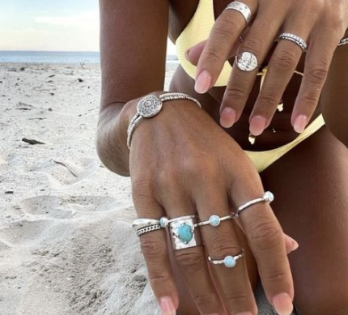
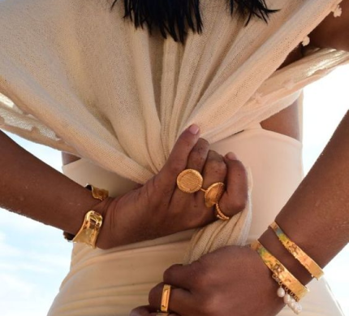
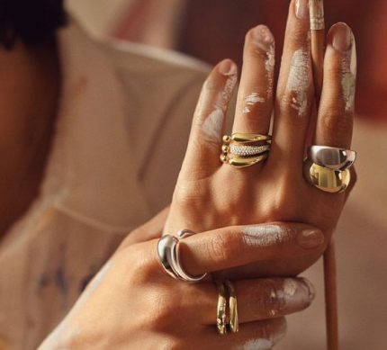
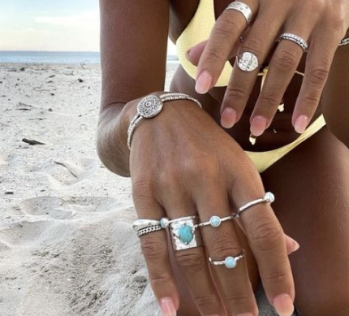
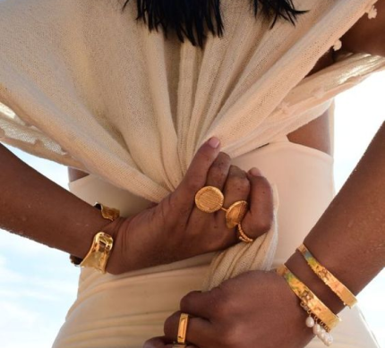
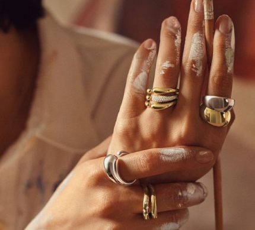

Inspiración
La verdadera belleza de la joyería no radica únicamente en su brillo exterior, sino en el significado profundo que tiene para nosotros. Cada pieza que elegimos usar no solo adorna nuestro cuerpo, sino que también refleja nuestra personalidad, nuestras experiencias y nuestras emociones más íntimas.
La clave para llevar la joyería con confianza y estilo radica en ser fiel a nosotros mismos. No se trata solo de seguir tendencias o imitar a otros, sino de descubrir lo que realmente nos hace sentir cómodos y libres. Ya sea un anillo simple pero significativo, un collar que nos recuerda a un ser querido o unos pendientes que nos hacen sonreír, la joyería se convierte en una extensión de nuestro ser.
 





Cuando nos permitimos ser auténticos con nuestra elección de joyería, nos empoderamos para expresarnos sin palabras, para contar nuestra historia sin decir una sola frase. Cada pieza se convierte en un símbolo de nuestra individualidad, de nuestras pasiones y de nuestros sueños.
Así que no tengas miedo de explorar y experimentar con la joyería. Encuentra aquellas piezas que te hagan sentir como tú mismo, que te inspiren a brillar desde adentro hacia afuera. Que cada joya que uses sea un recordatorio de tu fuerza, tu belleza y tu libertad para ser quien realmente eres.
¡Lleva tu joyería con orgullo y deja que tu brillo interior ilumine el mundo!